컴퓨터활용능력-2급 (2010-10-17 기출문제)
1과목: 컴퓨터 일반
1. 다음 중 한글 Windows XP에서 임의의 폴더 아이콘을 선택하고 <Alt>+<Enter>키를 누른 경우와 같은 결과를 보여주는 작업으로 옳은 것은?
- 선택된 폴더의 바로가기 메뉴에서 [속성]을 선택한다.
- 선택된 폴더를 더블 클릭한다.
- 마우스의 오른쪽 단추를 누른다.
- [Alt]+[F4] 키를 누른다.
(정답률: 71%)

2. 다음 중 컴퓨터에서 사용하는 멀티미디어와 관련하여 비트맵 이미지에 대한 설명으로 옳지 않은 것은?
- 픽셀로 이미지를 표현하며 래스터 이미지라고도 한다.
- 이미지를 확대하면 테두리가 거칠어진다.
- 벡터 방식과 비교하여 기억공간을 적게 차지한다.
- 다양한 색상으로 사진 같은 사실적인 이미지를 표현한다.
(정답률: 56%)
3. 다음 중 한글 Windows XP의 [제어판]에 있는 [디스플레이]를 이용하여 설정할 수 있는 기능으로 옳지 않은 것은?
- 바탕 화면의 배경 그림을 새로이 설정할 수 있다.
- 화면 보호기의 종류와 대기 시간 등을 설정할 수 있다.
- 화면의 해상도를 설정할 수 있다.
- 바탕 화면의 아이콘 정렬 순서를 설정할 수 있다.
(정답률: 71%)
4. 다음 중 한글 Windows XP의 시스템 도구인 [디스크 정리] 기능에 대한 설명으로 옳은 것은?
- 불필요한 파일을 삭제하여 디스크의 여유 공간을 확보한다.
- 디스크 단편화를 제거하여 디스크의 여유 공간을 확보한다.
- 불필요한 디스크를 검색하여 시스템에서 삭제한다.
- 디스크의 저장 공간을 공유하여 여유 공간을 확보한다.
(정답률: 64%)
5. 다음 중 한글 Windows XP의 [제어판]에 있는 [키보드]를 이용하여 할 수 있는 작업으로 옳지 않은 것은?
- 키보드 하드웨어의 문제 해결
- 글꼴과 자판 배열의 설정
- 문자 반복 재입력 시간의 설정
- 키보드 장치의 속성 창의 표시
(정답률: 45%)
6. 다음 중 한글 Windows XP의 [폴더 옵션]에서 [일반] 탭의 “기본값 복원”을 클릭하였을 때 설정되지 않은 것은?
- 같은 창에서 폴더 열기
- 폴더에 일반 작업 표시
- Windows 압축 폴더 사용
- 두 번 클릭해서 열기(한 번 클릭해서 선택)
(정답률: 58%)
7. 다음 중 한글 Windows XP의 [인터넷 프로토콜(TCP/IP) 등록 정보] 창에서 설정할 수 있는 항목으로 옳지 않은 것은?
- IP 주소
- 서브넷 마스크
- 작업 그룹
- 기본 게이트웨이
(정답률: 50%)
8. 다음 중 인터넷을 이용한 멀티미디어의 실시간 처리와 가장 관련성이 있는 기술로 옳은 것은?
- 모델링
- 스트리밍
- 모핑
- 디더링
(정답률: 81%)
9. 다음 중 컴퓨터를 사용한 정보 통신과 관련한 통신 용어로 설명이 옳지 않은 것은?
- 흐름 제어(Flow Control)：자료를 송수신할 때 버퍼를 사용하여 그 속도의 흐름을 조절하기 위한 기능
- 정지 비트(Stop Bit)：전송되는 데이터의 끝을 알리기 위해 보내는 비트
- 패리티 비트(Parity Bit)：데이터 전송시 에러 검출을 위해 데이터 비트에 붙여서 보내는 비트
- 전송 속도(bps)：Bytes Per Second의 약자로 초당 전송되는 바이트 수를 의미한다.
(정답률: 48%)
10. 다음 중 웹에서 방문한 사이트에 아이디 등을 기억하게 설정하여 다시 해당 사이트를 방문하면 아이디가 자동으로 입력되도록 하는 웹 브라우저 기능으로 옳은 것은?
- 캐시
- 쿠키
- 북마크
- 액티브엑스
(정답률: 72%)
11. 다음 중 한글 Windows XP에서 열려진 창들 간의 작업 전환을 위한 방법으로 옳지 않은 것은?
- <Ctrl>+<Tab> 키를 누르면 나오는 열려진 창의 목록에서 전환이 가능하다.
- <Alt>+<Esc> 키를 이용하면 열려진 창의 전환이 가능하다.
- [작업 표시줄]에 있는 작업목록 중 원하는 창의 해당하는 항목을 클릭한다.
- [Windows 작업 관리자] 창의 [응용 프로그램] 탭에서 전환을 원하는 프로그램을 선택한 후 [전환] 버튼을 클릭한다.
(정답률: 42%)
12. 다음 중 한글 Windows XP에서 사용할 수 있는 바로가기 아이콘에 관한 설명으로 옳지 않은 것은?
- 바로가기 아이콘을 삭제해도 원본 프로그램에는 영향을 미치지 않는다.
- 하나의 원본 파일에 대한 바로가기 아이콘을 여러 개를 만들어 사용할 수 있다.
- 바로가기 아이콘은 실행 파일에만 적용하여 만들 수 있다.
- 바로가기 아이콘의 파일의 확장자는 .LNK이다.
(정답률: 66%)
13. 다음 중 한글 Windows XP의 [프로그램 추가/제거] 창에서 할 수 있는 작업 내용으로 옳지 않은 것은?
- Windows 구성요소를 추가하거나 제거할 수 있다.
- 웹 브라우징이나 전자메일 전송과 같은 작업에 사용할 기본 프로그램을 선택할 수 있다.
- Windows 운영체제를 다시 설치할 수 있다.
- 현재 설치된 프로그램을 변경하거나 제거할 수 있다.
(정답률: 54%)
14. 다음 중 인터넷 기술을 이용하여 기업 내부의 업무를 해결하려는 네트워크 환경으로, 인터넷과 동일한 TCP/IP 프로토콜을 사용한 LAN 기반 네트워크로 옳은 것은?
- 광대역통신망(WAN)
- 인트라넷(Intranet)
- 부가가치통신망(VAN)
- 엑스트라넷(Extranet)
(정답률: 72%)
15. 다음 중 컴퓨터 범죄 예방에 대한 설명으로 옳지 않은 것은?
- 해킹 방지를 위해 패스워드는 가급적 변경하지 않는다.
- 정보 누출이나 해킹 방지를 위해 방화벽 체제를 정비한다.
- 암호는 가급적이면 알파벳과 숫자, 특수문자 등을 섞어서 만든다.
- 지속적인 해킹 감시 및 접근 통제 도구를 개발한다.
(정답률: 84%)
16. 다음 중 컴퓨터에서 사용하는 자료의 물리적 단위가 작은 것부터 큰 것의 순으로 나열이 옳은 것은?
- Bit - Byte - Nibble - Word
- Bit - Nibble - Byte - Word
- Bit - Byte - Word - Nibble
- Nibble - Bit - Byte - Word
(정답률: 62%)
17. 다음 중 한글 Windows XP에서 전자우편에 관한 설명으로 옳지 않은 것은?
- 인터넷을 통하여 사용자끼리 서로 편지를 주고 받는 서비스를 말한다.
- 일반적으로 편지를 받을 때는 SMTP 서버를 이용하고, 편지를 보낼 때는 POP 서버를 이용한다.
- 전자우편 주소는 '사용자 ID@호스트 주소'의 형식으로 이루어진다.
- MIME은 웹 브라우저가 지원하지 않는 각종 멀티미디어 파일의 내용을 확인하고 실행시켜 주는 프로토콜이다.
(정답률: 59%)
18. 다음 중 컴퓨터에서 사용하는 캐시(Cache) 메모리에 대한 설명으로 옳은 것은?
- 중앙처리장치와 주기억장치 사이에서 컴퓨터의 처리 속도를 향상시키는 역할을 한다.
- 주기억장치와 하드디스크의 속도 차이를 극복하기 위하여 사용한다.
- 주기억장치보다 큰 프로그램을 불러와 실행할 때 유용하다.
- 캐시 메모리는 접근 속도가 빠른 동적 램(DRAM)을 사용한다.
(정답률: 61%)
19. 다음 중 디지털 컴퓨터의 특징에 관한 설명으로 옳은 것은?
- 온도, 전류, 속도 등과 같은 연속적으로 변하는 데이터를 처리한다.
- 연산 속도가 빠르며, 증폭 회로를 사용한다.
- 산술 또는 논리 연산에 숫자나 문자를 사용한다.
- 특수 목적으로 사용되며, 정밀도에 제한이 없다.
(정답률: 56%)
20. 다음 중 컴퓨터에서 제어 장치의 구성 요소로 옳지 않은 것은?
- 명령계수기(instruction counter)
- 명령해독기(instruction decoder)
- 누산기(accumulator)
- 부호기(encoder)
(정답률: 54%)
2과목: 스프레드시트 일반
21. 다음과 같은 셀 서식이 지정된 셀에 -23456을 입력 하였을 때 셀에 나타나는 결과값으로 옳은 것은?
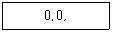
- -23456.0
- -23.0
- -23.4
- -23.5
(정답률: 37%)
22. 다음 중 인쇄 미리 보기 기능에 대한 설명으로 옳지 않은 것은?
- 인쇄 미리 보기를 실행한 상태에서 마우스 끌기로 여백과 열의 너비를 조절할 수 있다.
- [페이지 나누기 미리 보기]를 클릭하면 인쇄 미리보기를 종료하고 인쇄할 페이지를 구분하여 표시해 준다.
- [설정] 단추를 클릭하면 페이지 설정 대화상자가 표시 되는데 인쇄 제목 및 인쇄 영역에 관련된 사항은 설정 할 수 없다.
- 머리글이 데이터와 겹치지 않게 하려면 페이지 설정의 여백 탭에서 머리글 상자의 값이 위쪽 상자의 값보다 커야 한다.
(정답률: 32%)
23. Visual Basic 편집기 창에서 실행할 매크로를 선택하기 위해 아래와 같은 그림을 나타내었다. 다음 중 그 내용이 옳지 않은 것은?
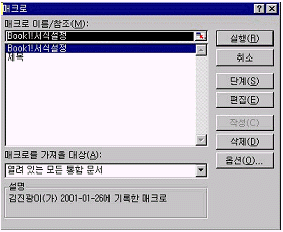
- 메뉴 중 [도구]의 [매크로]명령으로 나타난 창이다.
- 매크로 이름을 선택하고 [실행]단추를 클릭하면 엑셀 창에서 매크로가 자동 실행된다.
- 매크로 이름을 선택하고 [편집]단추를 클릭하면 매크로 기록 내용을 편집할 수 있는 매크로 모듈창이 열린다.
- 매크로 이름을 선택하고 [옵션]단추를 클릭하면 매크로 이름과 바로 가기 키를 변경할 수 있다.
(정답률: 51%)
24. 다음 중 정렬과 필터에 관한 설명 중 옳지 않은 것은?(문제오류로 여기서는 3번을 정답 처리 합니다. 실제 시험장에서는 3번이 정답으로 발표 되었지만 검토 결과 2, 3번 모두 틀린것 같습니다. 이의 제기는 오류 신고를 통해서 해주시기 바랍니다.)
- 데이터 정렬은 기본적으로 3개의 기준을 가지고 정렬할 수 있고 더 많은 기준으로 정렬하려면 정렬된 일부분을 범위로 설정하여 정렬한다.
- 고급 필터에서는 조건 범위와 복사 위치가 반드시 필요하다.
- 데이터 정렬 시 숨겨진 행이나 열에 있는 데이터는 정렬 대상에서 제외된다.
- 고급 필터는 추출된 결과를 원본 데이터 다른 위치에 표시할 수 있다.
(정답률: 69%)
25. 다음 중 3차원 차트에서 조절할 수 없는 것은?
- 폭(5 ~ 500%)
- 상하 회전(-90 ~ 90)
- 좌우 회전(0 ~ 360)
- 원근감(0 ~ 100)
(정답률: 44%)
26. 다음 중 문자 데이터 입력에 관한 설명으로 옳지 않은 것은?
- 숫자와 문자가 혼합된 데이터가 입력되면 문자열로 입력된다.
- 오른쪽의 셀이 비어 있는 경우 한 셀의 너비보다 긴 문자열이 입력되면, 다음 셀에 걸쳐서 표시된다.
- 한 셀에 두 줄 이상의 문자열을 입력할 때는 <Shift>+<Enter> 키를 누르고 입력하면 된다.
- 문자 데이터는 기본적으로 왼쪽으로 정렬된다.
(정답률: 58%)
27. 아래 워크시트에서 강동 매장의 수량합계를 구하여 [B8]셀에 표시하는 함수식으로 옳은 것은?
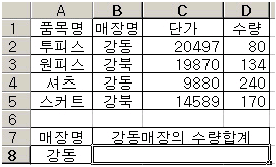
- =DSUM(A2:D5,4,A7:A8)
- =DSUM(A1:D5,4,A7:A8)
- =DSUM(D1:D5,3,A7:A8)
- =SUM(A1:D5,A7:A8,4)
(정답률: 52%)
28. 일반적으로 새 통합 문서를 열면 3개의 워크시트가 나타난다. 이것을 10개로 조정하려고 할 때 옳은 것은?
- [도구]-[옵션]에서 '일반' 탭을 눌러 '새 통합 문서의 시트수'를 10으로 고친다.
- [보기]-[사용자 지정 보기]에서 '새 통합 문서의 시트수'를 10으로 고친다.
- [창]-[새 창]에서 새 창을 추가로 7개 만든다.
- 시트 탭을 오른쪽 마우스로 눌러 코드 보기를 하여 ThisWorkbook을 10번 복사한다.
(정답률: 48%)
29. 다음 중 입사일이 1989년 6월 1일인 직원의 오늘 현재까지의 근속 일수를 구하려고 할 때 가장 적당한 함수 사용법은?
- =TODAY()-DAY(1989, 6, 1)
- =TODAY()-DATE(1989, 6, 1)
- =DATE(1989, 6, 1)-TODAY()
- =DAY(1989, 6, 1)-TODAY()
(정답률: 47%)
30. 다음 중 차트에 대한 설명으로 옳지 않은 것은?
- 차트를 작성한 후 원본 데이터 셀에 입력된 값이 변경되면 자동으로 차트의 값이 변경된다.
- 차트에 표시되는 데이터 레이블은 차트의 원본 데이터를 표시한다.
- 차트로 작성할 데이터를 시트에 입력하지 않고 차트마법사 2단계에서 직접 모든 원본 데이터를 입력할 수도 있다.
- 숨겨진 셀도 차트에 표시하려면 해당 차트를 선택하고 [도구]-[옵션]의 [차트] 탭에서 '화면에 표시된 셀만 그림' 항목의 선택을 해제한다.
(정답률: 20%)
31. 아래의 워크시트에서 부분합의 기능을 이용하여, '성별'에 따라 점수의 평균을 구하고자 한다. 부분합을 실행한 결과가 바르게 나오기 위해 가장 먼저 해야하는 작업으로 옳은 것은?
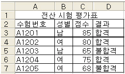
- 평균 필드를 점수 필드 옆에 삽입해야 한다.
- 성별 필드를 기준으로 데이터를 정렬해야 한다.
- [부분합] 대화상자에서 [새로운 값으로 대치]를 설정해야 한다.
- 점수 필드를 결과 필드 옆으로 이동해야 한다.
(정답률: 61%)
32. 다음 중 수식으로 계산된 결과 값은 알고 있지만 그 결과 값을 계산하기 위해 수식에 사용된 입력 값을 모를 경우 사용하는 기능으로 옳은 것은?
- 목표값 찾기
- 피벗 테이블
- 시나리오
- 레코드 관리
(정답률: 59%)
33. 다음 중 [조건부 서식]의 서식 지정에 대한 설명으로 옳지 않은 것은?(주의 : 본 문제는 엑셀 2003으로 시험이 치루어진 2010년도 문제임을 감안하고 푸셔야 합니다)
- 조건부 서식은 기존의 셀 서식에 우선하여 적용된다.
- 하나의 셀에 2개의 조건이 모두 해당될 경우 조건1이 조건2에 우선한다.
- 조건은 5개까지 지정할 수 있다.
- 다른 시트의 데이터를 참조하여 서식을 적용할 수 있다.
(정답률: 50%)
34. 다음 중 수식과 그 실행 결과가 옳지 않은 것은?
- =RIGHT("Computer",5) ==> puter
- =SQRT(5) ==> 25
- =TRUNC(5.6) ==> 5
- =OR(6<5, 7>5) ==> TRUE
(정답률: 32%)
35. 다음 중 평균 필드의 값이 '80' 이상이고 '90' 이하인 데이터를 추출하기 위한 [고급 필터]의 조건식으로 옳은 것은?
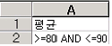
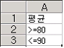
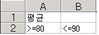
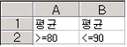
(정답률: 44%)
36. 아래 표를 원본으로 하여 묶은 세로 막대형 차트를 작성할 때 차트마법사의 4단계 중 2단계에서 설정된 내용으로 옳지 않은 것은?(제외된 문제, 문제 출제당시 오피스 2003 기준으로 출제되어 현재는 제외된 문제 입니다. 참고만 하세요.)
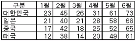
- 차트 종류 : 묶은 세로 막대형
- X(항목) 축 레이블: 1월에서 6월까지의 1행
- 계열 이름: 대한민국에서 태국까지의 1열
- 계열 값: 숫자로 표시된 24개 셀
(정답률: 25%)
37. '찾기 및 바꾸기' 대화상자에서 다음과 같이 입력하였을때 실행 후의 결과가 옳지 않은 것은?(본 문제는 엑셀 2003 기준 문제 입니다.)
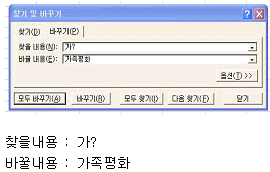
- 실행 전 : 가
실행 후 : 가족평화 - 실행 전 : 가나,
실행 후 : 가족평화, - 실행 전 : 가족평화
실행 후 : 가족평화평화 - 실행 전 : 가?
실행 후 : 가족평화
(정답률: 33%)
38. 다음 중 매크로에 대한 설명으로 옳지 않은 것은?
- 매크로 이름의 첫 글자는 반드시 문자이여야 하며, 나머지는 문자, 숫자, 밑줄 등을 혼합하여 사용할 수 있다.
- [새 매크로 기록]시 이미 존재하는 매크로명이 있으면 기존 매크로명을 바꿀지 여부를 확인한다.
- 매크로 실행의 바로 가기 키가 엑셀의 바로 가기 키보다 우선이다.
- 매크로의 이름에는 공백을 포함할 수 있다.
(정답률: 63%)
39. 다음 중 틀 고정에 대한 설명으로 옳은 것은?
- 문서의 내용이 많은 경우 화면을 분할하여 여러 화면을 참조해가면서 작업할 때 편리한 기능이다.
- 화면에 표시되는 틀 고정 형태는 인쇄시 적용되지 않는다.
- 틀 고정 취소는 틀 고정 선을 마우스로 더블 클릭하면 된다.
- 틀 고정은 행이나 열중에서 하나만 설정이 가능하다.
(정답률: 42%)
40. 다음 시트에서 아이디 별로 총주문금액을 계산하려고 할 때, [E2] 셀에 들어갈 수식으로 옳은 것은?
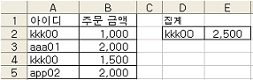
- =SUMIF (A:A, D2, B:B)
- =SUM (A:B)
- =IF(kkk00=2500,A,B)
- =COUNTIF (A:A, D2)
(정답률: 51%)
선택된 폴더의 바로가기 메뉴에서 [속성]을 선택하면 해당 폴더의 속성 창이 열리게 되어 폴더의 크기, 생성일자, 수정일자, 속성 등을 확인할 수 있다. [Alt]+[Enter] 키를 누르면 선택된 폴더의 속성 창이 바로 열리기 때문에, 이와 같은 결과를 보여주는 작업은 선택된 폴더의 바로가기 메뉴에서 [속성]을 선택하는 것이다.